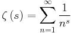
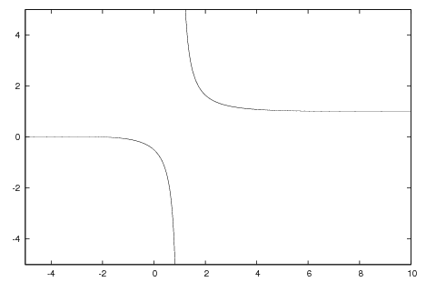
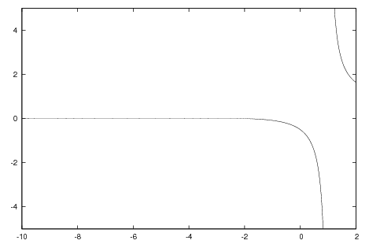
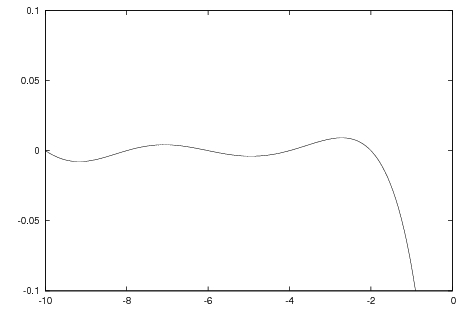
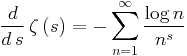

;; -*- mode: imath -*-
;; This buffer is for notes you don't want to save, and for Lisp evaluation.
;; If you want to create a file, visit that file with C-x C-f,
;; then enter the text in that file's own buffer.

のグラフを描いてみよう。

式の形からしても の範囲では単調減少しているように見える。
ではどうなっているのか、詳細を見てみると、、、

本当に拡大してみるとなにか波だっているように見える。

ゼータ関数を微分してみる。項別微分が出来るので、

となる。